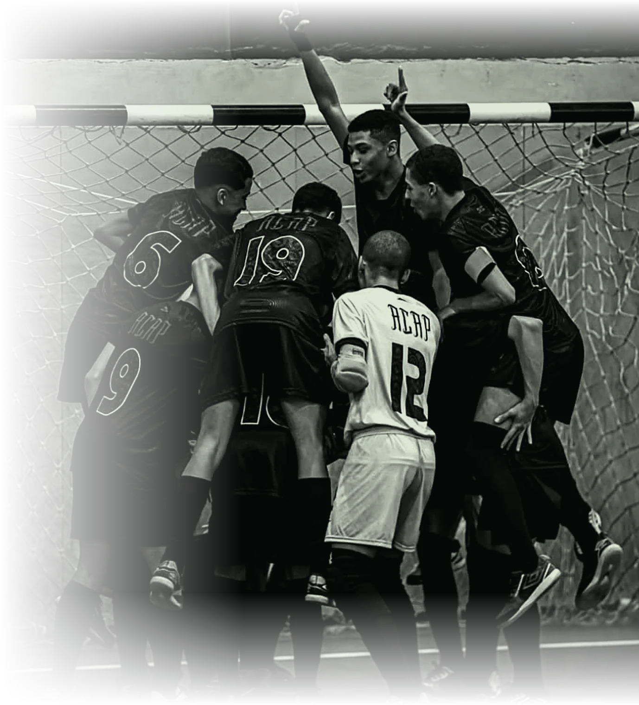
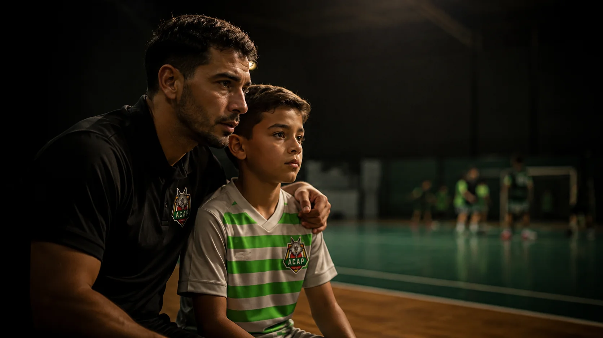

ZONA LESTE · SÃO PAULO
ACAP Futsal — Associação Contra Ataque Paulista. Clube formador de atletas das categorias Sub-7 ao Sub-18, com garra em quadra e disciplina fora dela.
A ACAP — Associação Contra Ataque Paulista é um clube de futsal formador de atletas, atuando da base ao alto rendimento com categorias do Sub-7 ao Sub-18. Mais do que resultado, formamos caráter: disciplina, coletivo e a garra de quem representa a Zona Leste de São Paulo dentro e fora da quadra.
Cada atleta entra sozinho e sai parte de algo maior — uma história que já soma 16 títulos da Federação Paulista de Futebol de Salão e uma torcida de milhares acompanhando cada passo do clube.

Trinta anos de história e uma estrutura pensada pro atleta, do primeiro chute ao alto rendimento.
Trinta anos de história na Zona Leste, formando atletas e revelando talentos para o futsal de alto nível.
Título sobre título na Federação Paulista de Futebol de Salão.
Formação para o alto rendimento, Sub-9 ao Sub-16. Conheça
Milhares acompanhando cada passo do clube dentro e fora de quadra.
Campeão Federação Paulista de Futebol de Salão
Categoria máxima da base (Sub-18)
Seguidores acompanhando o clube
Atletas revelados
Atletas formados
Uma trilha completa de formação, categoria por categoria.
Sub-9 ao Sub-16: um projeto de médio e longo prazo, com treinos especializados, avaliação física e acompanhamento pedagógico — o mesmo método que já formou +1000 atletas desde 1995.
Peneiras, matrículas e parcerias — fale com a gente pelo WhatsApp ou Instagram oficiais do clube.